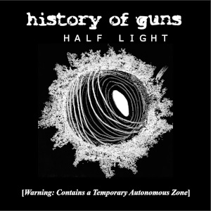
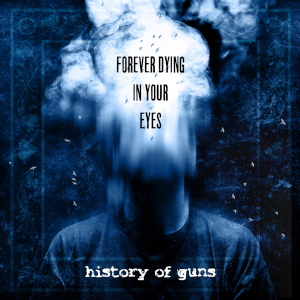
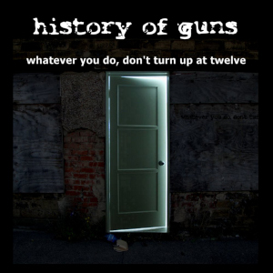
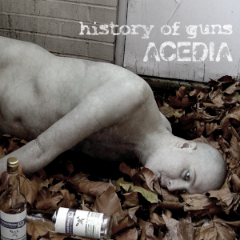
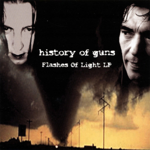

Coming full circle, an electronic album, a thematic and sonic sequel to their 2004 debut album, Flashes of Light. Originally planned as the follow-up to 2008's Acedia it was resurrected, reworked and released on the summer solstice, June 20, 2024. Introducing Caden Clarkson on guitar.

The return after a decade hiatus. A guitar-based collaboration with guitarist Jamu bringing a metal sensibility to the melting pot.
“an album that is polished, dramatic, full of poise and binding sentiment, and one of awesome sound and feeling.” - Liverpool Sound and Vision (UK)

A polarising album of disintegration. Raw, abrasive, and honest, consuming and integrating additional styles and genres into the evolving sound design. Includes the glam-goth-disco of "Friday Night, After Work", alongside the high energy punk of their live band sound on "Kicking Down the Doors" and "Who Controls You?", plus a return visit to the Flashes of Light structural style with the episodic journey piece "Departure, Journey, Arrival"

History Of Guns' focus on guitar-based songs led to one of their most cohesive and acclaimed albums to date. On release it was awarded 9/10 in Rock Sound Magazine.
The chaotic second album. Includes the defining anthem, "Your Obedient Servants".

The classic noir-industrial electronic-soundscape debut album.
Philosophy & World-Building
Origins & Metamodern Evolution
History Of Guns emerged in Hertfordshire in 1996 when founding memebers Max Rael, Del Alien and Stagger Lee began improvising late-night studio sessions in the dark. Becoming frontrunners of the UK underground Futurepunk Industrial scene throughout the 2000s, the project has spanned formats from raw duo electronica to a full 5-piece rock ensemble.
Half Light Lore: Starship Pickton Lock
The conceptual narrative of Half Light (2024) revolves around the starship Pickton Lock, orbiting a dead planet every 23 hours—trapped in a liminal transit between unbearable searing light and absolute freezing dark. Mirroring the somatic cycles of trauma and societal paralysis, the story frames time as stuck in an endless loop, where escape toward Arcadia requires quantum fractal jumps in odd time signatures.
Drug Castle Lore
An insinuated reality explored across flash fiction, prose, and experimental short films directed by Howard Gardner. Drug Castle is an old coastal psychiatric facility where bureaucratic and medical authorities explore the grotesque boundaries of human survival through unreliable narrators, surreal transformations, and clinical control.
Media & Video Artifacts
Del Alien and Max Rael explore the philosophical mechanics of metamodernism, the creation of secondary worlds, and the balance between concept and vocal performance.